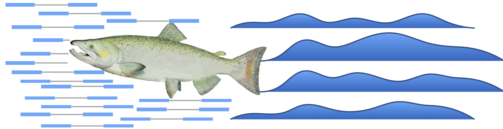

Practice: Introduction to gene expression (RNAseq) analysis¶
In this activity, we will learn about different read alignment and quantification programs, analyze gene expression data from maize, interpret the outputs, and run some quality control analyses on a matrix of RNAseq expression values.
Read alignment¶
There are many ways to analyze gene expression data, starting from how the reads are aligned/mapped against the genome, how we identify genes that are differentially expressed, and the types of downstream analyses we do with the data. In this notebook we will focus on (1) how to quantify gene expression data, (2) how to manipulate an expression-based dataframe, (3) and how we can assess the quality of the data prior to downstream analyses. We will work on analyzing the expression data in the next notebook.
In our raw fastq file, we have fragments of sequenced mRNAs and we want to know which genes they came from. We can do this by aligning or mapping the reads against the genome to figure out the exact base pair overlap of the reads and the genome, or we can pseudo-align or quasi-map the reads to figure out the relative position of where the reads align. These two approaches produce largely the same results, but each has unique advantages and disadvantages.
Allignment based algorithms are more computationally intense because after they determine which region in the genome the reads map to, run a local alignment, and record the exact coordinates and any differences between the genome and read. Alignemnt based programs produces a really large .sam file which contains the read information and where it aligns. A .sam file is essential for doing variant analyses and for quantifying alternative splicing, but it is not needed to simply count reads per gene. Alignment of RNAseq data is also challenging because the genome sequence contains both the introns and exons and RNAseq reads contain only exons (introns are spliced out), so a single read can map to several distant regions in the genome. There are several leading alignment based programs for RNAseq including HISAT2 and STAR (among many others, don’t @ me!):
HISAT2:
http://ccb.jhu.edu/software/hisat2/index.shtml
STAR:
https://github.com/alexdobin/STAR
Pseudoalignment or quasi-mapping based programs work a little differently. Instead of calculating the optimal alignment and exact overlap between a read and the genome, these programs use a hash table to figure out which transcript the read is from without doing the computationally intensive alignment. Pseudoaligners use the gene models (or transcripts) as a reference for alignment instead of the genome, so they don’t run into problems associated with splicing. Instead of producing an alignment file (.sam), pseudoaligners output a table with counts for each gene. Pseudoaligners run ultra fast and can process a stardard RNAseq sample in a few minutes (compared to hours for true aligners). There are a few good pseudoaligners and the two most popular are kallisto and Salmon:
kallisto:
https://pachterlab.github.io/kallisto/
Salmon:
https://combine-lab.github.io/salmon/
We will use Salmon in the course, but other programs might be better for your experimental system. In this lession we will be using RNAseq data from a few tissues in maize. You can also run the analyses in this notebook on the data you downloaded and trimmed from the SRA in the pre-class lesson.

To run Salmon we need an indexed file of transcripts (to map the reads against) and either unpaired or paired Illumina .fastq files. Salmon is installed on HPCC, and we can run it by loading the Salmon module:
$module load Salmon/1.2.1
First, we need to build our index. The index is a structure that Salmon uses to quasi-map RNA-seq reads during quantification. The index only needs to be constructed once per transcriptome/species, and it can then be reused to quantify many experiments. If you don't have a set of transcripts (transcriptome) you need to download it for your favorite genome. We can get this from several places including ensembl: http://ensemblgenomes.org/info/genomes?division=4 We can use the `wget` command on HPCC to download a file directly from a link. Note: The file will be downloaded automatically in your present working directory, Make sure you are running this in your home directory or scratch
$wget http://ftp.ebi.ac.uk/ensemblgenomes/pub/release-51/plants/fasta/zea_mays/cdna/Zea_mays.Zm-B73-REFERENCE-NAM-5.0.cdna.all.fa.gz
Here, we are downloading the set of transcripts from maize in fasta format, but you can run Salmon on your favorite species using data from the SRA (or your research project), and using the .cds or .transcript file from your favorite species. We can then use the `index` command of Salmon to build our index for mapping, where the `-t` flag specifies the transcript file (which we just downloaded) and `-i` specifies the directory and prefix for the index file(s) you will be building:
$salmon index -t Zea_mays.Zm-B73-REFERENCE-NAM-5.0.cdna.all.fa.gz -i Zea_mays_Salmon_index
After we have an index, we can run the quant function to quantify expression.
I have downloaded ~10 files from the SRA corresponding to maize seedling gene expression data. The data can be found under /mnt/research/REU_Plant_Genome_2021/RNAseq/data/. We will srart by quantifying expression for one of these samples, but if you are interested, you can quantify expression from all of them (see an example batch submission script below).
To run salmon quant, we will set a few flags as follows. -i sets the index -r sets the path to the fastq file (if the data is unpaired) -1 and -2 set the path for read 1 and read 2 for paired end data. -p sets the number of threads to use and -o sets the output directory:
$salmon quant -i Zea_mays_Salmon_index/ -l A -r /mnt/research/HRT841_F21/RNAseq/data/SRR940276.trimmed.fastq -p 6 -o SRR940276.quant
You can run this on a developmental node and it should run in a few minutes. We can enter the output directory to find the files we need. The files we care about are the /log/salmon_quant.log and quant.sf files. The log file contains all the info and metrics from the run and the .sf file contains the read counts for each gene. Read counts are important, but these can be misleading because longer genes will be fragmented into more pieces per single mRNA molecule, and might appear to have higher expression. Two genes with similar expression levels could have different read counts if one gene is significanlty larger. The numer of reads per gene (transcript) is also dependent on the total number of reads sequenced for each library. We can normalize the data by the number of reads per library and the lengths of transcripts to create a metric of transcripts per million (TPM). This will allow us to compare the expression pattern of the same gene across multiple tissues/timepoints.
Question: What is the read mapping percentage of this sample? Do you think this is good? What factors could be driving this mapping rate?¶
## Answer. Hint, the mapping rate is found in the salmon_quant.log file in your salmon output directory.
We can run individual quant commands for each file separately, but this is tedious, especially if we have thousands of RNAseq files. We can use a shell script to run them all automatically. Below is a shell script I wrote to do this. Note: you will need to change all of the directories here if you choose to test this shell script
#!/bin/bash
module load salmon
cd /mnt/research/VanBuren_Lab/Bob/Teaching/RNAseq/
for i in /mnt/research/HRT841_F21/RNAseq/data/*.fastq
do
unpaired=$(echo ${i})
Name=$(echo ${i} | sed 's/\/mnt\/research\/HRT841_f20\/RNAseq\/data\///'| sed 's/.fastq//')
echo ${i}
# Run salmon command followed by done to end the loop
salmon quant -l a -p 6 -r ${unpaired} -i Zea_mays_Salmon_index/ -o ${Name}_quant
echo ${Name} & done
We can follow the logic of shell scripts based on what we know about variables and loops in python. Here, we are running a for loop on all of the fastq files within a directory. Shell loops require three elements: for, do, and done. We will set two variables, one to retrieve the reads and one to set the output prefix. Instead of print, we will use echo. For the Name variable, echo will print to full path of the file, and we can use sed to remove all of the charactors we don’t want.
You can save this shell script with the file extension .sh and run it on a developmental node (or submit it to the queue via Slurm):
$bash salmon_quant_script.sh
Our shell sript will process all of the files individually, but we want all of the data in the same dataframe. We could write a script to parse each separate dataframe, rename the columns and merge them, but luckily for us, the Salmon function quantmergeexists to do this:
salmon quantmerge --quants *_quant -o merged TPM
We need to specify the directories that we want to merge using the --quants flag. Using * matches zero or more random charactors and will include any directories that end in “quant” -o specifies the prefix of the merged TPM file.
Note: You can run this shell script on the maize data if you want, but you can also run it on the data you downloaded from the SRA or your own sequencing data.
Data import and exploration¶
Now that we have a matrix of TPMs for a couple samples, we are ready to analyze the data for differential gene expression, co-expression networks, and other downstream analyses. But first, we need to import the data and we should test for variance between our replicates. You could use the maize data analyzed above or one of the three dataframes I provided on discord. If the data was collected carefully, we would expect a low amount of variance between the replicates, but a lot of variation between tissue types. If the data was collected haphazardly or mishandled, we would expect a high degree of distance between replicates in the PCA. If the replicates have a high amount of variance this will effect the downstream analyses. We can explore the RNAseq data using principal component analysis (PCA).
First, we need to import out table of TPMs as a dataframe. Note: You need to download an example dataframe file from Discord or from HPCC!
import numpy as np
import pandas as pd
expr_df = pd.read_csv('FILE_NAME')
expr_df = expr_df.set_index(expr_df.columns[0])
expr_df.head()
expr_df.shape
---------------------------------------------------------------------------
FileNotFoundError Traceback (most recent call last)
/tmp/ipykernel_30933/2169730351.py in <module>
2 import pandas as pd
3
----> 4 expr_df = pd.read_csv('FILE_NAME')
5 expr_df = expr_df.set_index(expr_df.columns[0])
6 expr_df.head()
~/miniconda3/envs/jbook/lib/python3.8/site-packages/pandas/util/_decorators.py in wrapper(*args, **kwargs)
309 stacklevel=stacklevel,
310 )
--> 311 return func(*args, **kwargs)
312
313 return wrapper
~/miniconda3/envs/jbook/lib/python3.8/site-packages/pandas/io/parsers/readers.py in read_csv(filepath_or_buffer, sep, delimiter, header, names, index_col, usecols, squeeze, prefix, mangle_dupe_cols, dtype, engine, converters, true_values, false_values, skipinitialspace, skiprows, skipfooter, nrows, na_values, keep_default_na, na_filter, verbose, skip_blank_lines, parse_dates, infer_datetime_format, keep_date_col, date_parser, dayfirst, cache_dates, iterator, chunksize, compression, thousands, decimal, lineterminator, quotechar, quoting, doublequote, escapechar, comment, encoding, encoding_errors, dialect, error_bad_lines, warn_bad_lines, on_bad_lines, delim_whitespace, low_memory, memory_map, float_precision, storage_options)
584 kwds.update(kwds_defaults)
585
--> 586 return _read(filepath_or_buffer, kwds)
587
588
~/miniconda3/envs/jbook/lib/python3.8/site-packages/pandas/io/parsers/readers.py in _read(filepath_or_buffer, kwds)
480
481 # Create the parser.
--> 482 parser = TextFileReader(filepath_or_buffer, **kwds)
483
484 if chunksize or iterator:
~/miniconda3/envs/jbook/lib/python3.8/site-packages/pandas/io/parsers/readers.py in __init__(self, f, engine, **kwds)
809 self.options["has_index_names"] = kwds["has_index_names"]
810
--> 811 self._engine = self._make_engine(self.engine)
812
813 def close(self):
~/miniconda3/envs/jbook/lib/python3.8/site-packages/pandas/io/parsers/readers.py in _make_engine(self, engine)
1038 )
1039 # error: Too many arguments for "ParserBase"
-> 1040 return mapping[engine](self.f, **self.options) # type: ignore[call-arg]
1041
1042 def _failover_to_python(self):
~/miniconda3/envs/jbook/lib/python3.8/site-packages/pandas/io/parsers/c_parser_wrapper.py in __init__(self, src, **kwds)
49
50 # open handles
---> 51 self._open_handles(src, kwds)
52 assert self.handles is not None
53
~/miniconda3/envs/jbook/lib/python3.8/site-packages/pandas/io/parsers/base_parser.py in _open_handles(self, src, kwds)
220 Let the readers open IOHandles after they are done with their potential raises.
221 """
--> 222 self.handles = get_handle(
223 src,
224 "r",
~/miniconda3/envs/jbook/lib/python3.8/site-packages/pandas/io/common.py in get_handle(path_or_buf, mode, encoding, compression, memory_map, is_text, errors, storage_options)
699 if ioargs.encoding and "b" not in ioargs.mode:
700 # Encoding
--> 701 handle = open(
702 handle,
703 ioargs.mode,
FileNotFoundError: [Errno 2] No such file or directory: 'FILE_NAME'
Question: How many Genes are there in this species and how many different RNAseq libraries were sequenced?
## Answer
## you can do this several ways, the simplest of which is to use the .shape function in pandas to see
## the demensionality of the data
You will notice we have three biological replicates in this dataframe (_R1, _R2, _R3). We can assess how similar they are to each other using a principle component analysis. We have a lot of individual data points here (i.e. genes) for doing a PCA, but some are more informative than others. If you look through the data you will see that a lot of genes have no or very little expression. These genes would have TPMs of 0 or >5. Since these data points are not informative, we can mask them before moving on:
# Filtering the dataframe for genes with low/no expression
## Filter out non-expressed genes
## Filter out lowly expressed genes
TPMs range by several orders of magnitude and a highly expressed gene can have a TMP of > 10,000! If we include values ranging from 1-10,000 in the same data frame, this would skew the PCA. Instead we can log2 transform the data to get numbers that are more reasonable. Note that some genes have 0 expression and log transformation of 0 is undefined. Even though we should have filtered these out, we can add 1 to every value. We can then use the numpy function np.log to log transform the values. We will use two loops to do this, as shown in the video.
# Create a loop (s) to log 2 transform the data
Now our data is in the same order of magnitude and we’re ready to run the PCA. See the transformed values:
If we run the PCA on the data frame as is, we would get one point for each gene. Lets transpose the data so we run the PCA on each sample instead:
# Use the function .transpose() to transpose the dataframe
Lets run the PCA using the python library scikit-learn. Scikit-learn is a powerful package for machine learning, dimensionality reduction, and predicitve data analysis. This might be a useful for the final project. Today, we will be using a simple fuction in scikit-learn to run a PCA. More details on this code can be found in ‘Notebook 10’ on the class GitHub page (we will not be going over this notebook in class, but it might be worthwhile to go throguh on your own). :ets see how much variation our first two PCs capture. Note: This is a complex data frame with many data points that we heavily transformed, so the amount of variation captured by the first two principle components might not be super high.
from sklearn.decomposition import PCA
How much variation is explained by the first two principle components?
# Use the function .explained_variance_ratio_
Now, we need to add back the sample names into a single data frame and plot the two PCs.
# Add a column to the dataframe containing the sample IDs
Now that we’ve run the PCA, we need to plot it! There are many ways to make a scatter plot in Python. We wil use the Seaborn library:
https://seaborn.pydata.org/
Seaborn is a data visualization library based on matplotlib, but it has improved functionality (it can make more complex and elegant plots) and it generally makes prettier plots than matplotlib. If you want ot learn more about Seaborn see the Grapevines in a Warming World notebook on the Plants and Python GitHub page: https://github.com/DanChitwood/PlantsAndPython/blob/master/PlantsAndPython9_STUDENT_Grapevines_in_a_Warming_World.ipynb
# Plot the first two principle components, how do your samples look?
Challenge problem: RNAseq pipeline¶
So far we have learned how to process RNAseq data using one sample at a time or using a loop in a shell script. We downloaded data from the sequence read archive (SRA), trimmed the reads using fastp, aligned the data using Salmon, and ran some quality control statistics using a gene expression matrix with a principle component analysis. This gene expression matrix is a starting point for downstream analyses, and there are many analyses we can run to gain some biological insight. We can run differential expression analysis to identify genes that have different expression patterns between tissues, stresses, or developmental timepoints. For instance, we could ask what genes are expressed in response to pathogen attack? We can also do more sophisticated analyses such as a gene network analysis to identify pathways and co-expression modules that are involved in a biological process. We can also do downstream functional analyses to identify what genes that are differentially expressed are doing in the plant using a gene ontology (GO) enrichment test or other similar analyses.
In a typical RNAseq experiment you might have dozens to hundreds of samples, and running them one at a time through half a dozen different programs can be a headache. In this case, it’s easier to run a pipeline with all of the programs strung together where you can supply raw data samples as input and output fully analyzed dataframes ready for the downstream analyses described above. There are several pipelines for RNAseq analyses, and we have created one using our favorite programs to trim, align, quantify, and identify differential expression between samples:
https://github.com/pardojer23/RNAseqV2
This RNAseq pipeline was created by PhD student Jeremy Pardo, and uses several of the programs we discussed last lesson including fastp and salmon, and it uses NumPy arrays and pandas to process the data. The RNAseq pipeline will also run differential gene expression analyses using DEseq. You simply need to provide it the directory where all of the raw RNAseq files are (2) a sample table a that describes the experimental set up, (3) and the set of transcripts from the species you are working with. The github page provides detailed instructions for how to install and run the pipeline using a conda virtual environment. Because of time, we will not be installing or running the pipeline this summer, but please feel free to install and run it if interested!